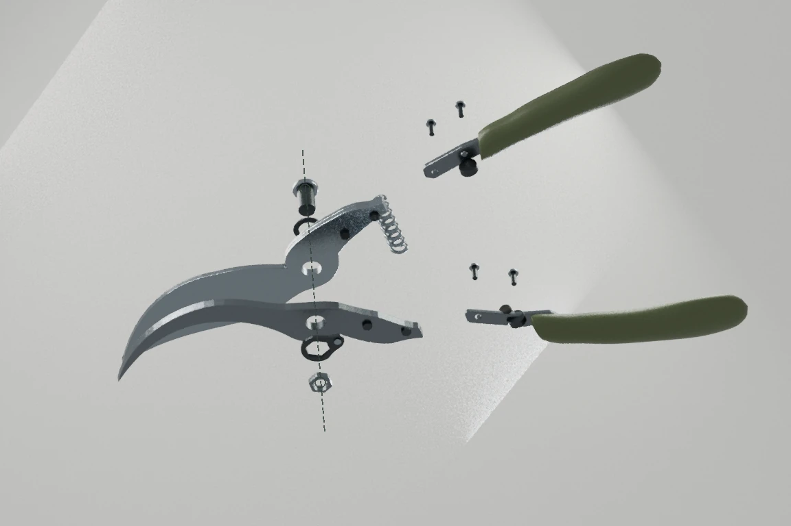

一次做對
受控的 OEM 製造,把核准的規格變成可重複的量產。

「握把這裡可以再收一點嗎？」「這是修過的輪廓，請確認。」

上下模的導孔，共用同一個基準。公差依你核准的圖面。

刀片用鋼、握把膠料，都按你確認的品級採購。

握把合不合手、樞軸順不順，拿到樣品就能確認。

刀刃咬合、彈簧回位，逐項對照你核准的樣品。

紙板外盒搭配模塑紙托，依銷售市場核對包材文件。

工程設計示意。實際零件與製程以核准圖面為準。
畫面中的往返文字與工程標註皆為專案示意。包裝標示依實際用料與銷售市場確認。
飛庄 · TOBISHO · ARS VS-8XZ · ARS · PDF受控的 OEM 製造,把核准的規格變成可重複的量產。
彈性的生產規劃,吸收材料、產地與交期的變動。
產品、品牌與市場屬於客戶——不屬於我們。
園藝與農用手工具,以鍛造與成形金屬為主——都在別人的品牌之後製造。不做電動工具,不追流行,也從不推自有零售品牌。這就是整間公司。